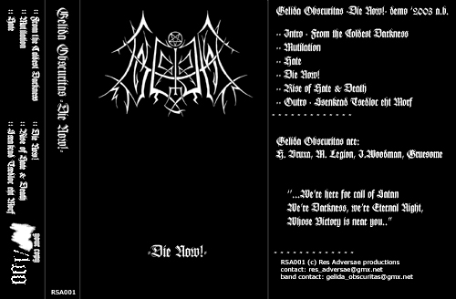

Gelida Obscuritas
Gelida Obscuritas
Мы здесь по зову Сатаны
Мы – Тьма, Мы – Вечная Ночь,
Чья победа близка.
Gelida Obscuritas – яркий представитель Black Metal.
Музыка и Идея, органично составляя единое целое, в рамках Black Metal направлены против бога и человека.
У этих людей есть что-то выходящее за эти рамки – то, что для немногих составляет истинную суть существования на этой планете.
Мы во многом согласны с музыкантами, их слова близки нам, и эти слова должны прозвучать.
CONTRA DEI: Расскажите историю группы. Какова цель группы?
 H.B.: Gelida Obscuritas была основана осенью 2002 a.b.
вместо существовавшей до этого Gelidus Caliga, распущенной по идеологическим
соображениям. Часть материала GC (а именно — песни, написанные лично
мной) перешла в GO. В качестве вокалиста был приглашён Misanthropic Legion,
музыкальные данные которого были на тот момент известны мне по его работе в
группах Unholycaust и Alcothrone, а личные качества — по некоторым
разговорам. Басист Infernal Woodman приехал из Сибири, он мой давний знакомый.
Барабанщик Commander Gruesome играет также в группе Hatestorm. Gelida Obscuritas
не преследует целей, связанных с достижением популярности или же зарабатыванием
денег. Существование группы связано с тем, что на данный момент мы считаем
музыку наиболее подходящим для нас способом выражения наших чувств и мыслей.
H.B.: Gelida Obscuritas была основана осенью 2002 a.b.
вместо существовавшей до этого Gelidus Caliga, распущенной по идеологическим
соображениям. Часть материала GC (а именно — песни, написанные лично
мной) перешла в GO. В качестве вокалиста был приглашён Misanthropic Legion,
музыкальные данные которого были на тот момент известны мне по его работе в
группах Unholycaust и Alcothrone, а личные качества — по некоторым
разговорам. Басист Infernal Woodman приехал из Сибири, он мой давний знакомый.
Барабанщик Commander Gruesome играет также в группе Hatestorm. Gelida Obscuritas
не преследует целей, связанных с достижением популярности или же зарабатыванием
денег. Существование группы связано с тем, что на данный момент мы считаем
музыку наиболее подходящим для нас способом выражения наших чувств и мыслей.
 M.L.: Некоторое время назад я собрал группу Unholycaust, в
которой был вокалистом. Цели группы были благородными — показать, что мы
думаем, чувствуем, мы пытались говорить о том, что важно для нас. Но команда
быстро развалилась, в силу ряда причин, некоторые из которых обозначены в нашей
песне 'Die Now!', но об этом чуть дальше; просто в группе не было никого, хоть
сколько-то имеющего правильное восприятие всего происходящего. Потом меня
позвали в "Alcothrone". С ними меня связывали только музыкальные интересы без
какого-либо намёка на идейную почву. Позже произошла наша встреча с Hateful
Brux'ой, мы оба чувствовали, что эта встреча должна произойти, так оно и вышло.
Дальше всё происходило достаточно чётко — Bruxa сказала, что у неё
неприятности с составом, и что она будет его распускать, так что место вокалиста
вакантно. Цели этой группы — показать наше противостояние богу, ненависть
ко всему божественному, презрение к чел-овечеству.
M.L.: Некоторое время назад я собрал группу Unholycaust, в
которой был вокалистом. Цели группы были благородными — показать, что мы
думаем, чувствуем, мы пытались говорить о том, что важно для нас. Но команда
быстро развалилась, в силу ряда причин, некоторые из которых обозначены в нашей
песне 'Die Now!', но об этом чуть дальше; просто в группе не было никого, хоть
сколько-то имеющего правильное восприятие всего происходящего. Потом меня
позвали в "Alcothrone". С ними меня связывали только музыкальные интересы без
какого-либо намёка на идейную почву. Позже произошла наша встреча с Hateful
Brux'ой, мы оба чувствовали, что эта встреча должна произойти, так оно и вышло.
Дальше всё происходило достаточно чётко — Bruxa сказала, что у неё
неприятности с составом, и что она будет его распускать, так что место вокалиста
вакантно. Цели этой группы — показать наше противостояние богу, ненависть
ко всему божественному, презрение к чел-овечеству.
CD: Ваше название переводится как Холодная Тьма - какой смысл вы вкладываете в это?
H.B.: Холодная, или Ледяная, Тьма как вечное величие, Сила, волю которой мы воплощаем через свою жизнь, свою деятельность и свою музыку. Пламя Ненависти и Лёд Презрения — две стороны одного явления, направленного на свет и его порождения.
M.L.: Холод безжизненности, холод Смерти.
CD: Чем творчество Gelida Obscuritas отличается от творчества других Black Metal банд?
H.B.: Вероятно, нашу музыку нельзя назвать полностью уникальной, в чём-то может прослеживаться влияние уважаемых нами команд — Mayhem, Vlad Tepes, Mutiilation, Tsjuder и других. На мой взгляд, главное, что отличает наше творчество — это искренность; мы не поём о том, о чём петь «принято» и «модно» — музыка и лирика отражают наше внутреннее состояние, наше взаимодействие с миром. Что касается собственно музыки, она, на мой взгляд, достаточно мелодична и в то же время хаотична; это быстрый, сырой Black Metal.
M.L.: Black Metal изначально зарождался как противоборствующее христианству течение. Black Metal прежде всего говорил о Дьяволе. Многие про это просто забыли. Мы же стоим у истоков этих предопределений. Это нас отличает от большинства.
CD: В чем вы черпаете вдохновение?
H.B.: Источник вдохновения — это, в первую очередь, то, что в сердце, наша Верность и наша Ненависть. Иногда на появление новых произведений оказывают влияние какие-то внешние события, служащие катализатором.
M.L.: Вдохновение возникает из... Тьмы, переживаний каких-то процессов в своей душе, мыслей, взаимодействия со Тьмой, открытий чего-то нового на Пути, из ярости.
CD: Что будет с группой дальше?
H.B.: Мы рассчитываем выпустить альбом, после чего группа, вероятнее всего, прекратит своё существование.
M.L.: У нас есть демо, следом за ним будет записан альбом. Далее будет поставлена точка. Группа прекратит своё существование. Останавливаться на этом не стоит. Будет сказано Слово. Всё.
CD: Что для вас Black Metal?
H.B.: Black Metal — это инструмент, оружие, используемое нами в войне с богом. Нередко можно видеть, что средство начинает восприниматься как цель, но Black Metal — не самоцель, но то, что существует ради воплощения определённых целей. Это язык, позволяющий высказать то, для чего не хватает слов в человеческом языке.
M.L.: Black Metal для нас — оружие, которое используется до определённого момента. Когда цель достигнута, он перестаёт удовлетворять как средство противостояния, но это, безусловно, этап, который должен быть пройден.
CD: Насколько эта идея жива сейчас? Какое участие вы принимаете в Black Metal культуре?
H.B.: Сейчас слишком много появилось модных групп, для которых Идея — это нечто отвлечённое и в лучшем случае второстепенное, а обычно — вообще не имеющее значения. Разумеется, нельзя было ожидать, что будет иначе. Такая ситуация была предопределена в тот момент, когда Black Metal впервые попал на газетные полосы и в новостные передачи. После этого нельзя было ожидать, что не будет профанации. Сейчас, а особенно в этом городе, трудно говорить о Black Metal культуре, а, следовательно, и о нашем участии в ней.
M.L.: Black Metal агонизирует. Очень мало осталось команд, делающих что-то действительно искренне, поэтому он мёртв большей своей частью. Мы НЕ принимаем участия в этой "культуре". Она отсутствует как класс.
CD: Как вы оцениваете претензии Black Metal на то, что это действительно Зло, выходящее за рамки музыкального стиля?
H.B.: Я бы сказала, Black Metal — это разрушение души звуком. Что касается выхода за рамки только музыкального стиля, на мой взгляд, это верно. Однако нередко можно услышать мнение, что Black Metal, сыгранный технично или же имеющий определённые музыкальные достоинства, не является истинным. На мой взгляд, это абсурдно. Безусловно, технические данные музыкантов и достоинства сыгранной музыки не первостепенны. Но это отнюдь не значит, что Black Metal должен целенаправленно играться некачественно. Если кто-то хочет донести свою мысль до слушателя, хорошо бы ему не шепелявить и не заикаться. Хотя, безусловно, первостепенное значение имеет наличие этой мысли.
M.L.: Как было сказано чуть выше, если команда предана Дьяволу на 100%, если за словами стоят какие-то конкретные вещи, делаемые не на уровне сожжения церквей, а чего-то более глубокого — взаимодействия с Дьяволом, познаний, открытий и способностью совместить это каким-то образом с музыкой, способностью воплотить свои мысли во что-то действующее на слушателей, тогда те, в ком есть эта часть, поймут их. Тогда банда может претендовать на честность того, что они делают.
CD: Развиваясь, эта культура подразумевала союз, братство. В чем вы видите причину многочисленной вражды? Есть ли враги у вас?
H.B.: Видимо, дело в том, что люди часто видят в Black Metal средство для решения каких-то личных проблем, для ублажения своего ego. Столкновение интересов и ведёт к возникновению вражды. Отдельное место занимают конфликты между теми, кто играет эту музыку для зарабатывания денег или славы и теми, кто делает это по более глубоким мотивам.
Враги? Такой титул надо ещё заслужить.
M.L.: Ни о каком братстве сейчас речи идти не может. Команды, являющие собой образцы честности, не выступают, поэтому с ними достаточно сложно контактировать.
Вражда? Я думаю, это нельзя назвать враждой. Просто все друг перед другом хотят выставиться, показать, что вот, мы "true", а вы — нет. Из-за этого все распри и возникают. Нам этот момент безразличен. Надо заслужить право называться врагом, я думаю, у нас их нет. Я бы не назвал врагами тех, кто пытается в чём-то помешать нам.
CD: Существует ли московская Black Metal сцена? Кто ее представители? Как вы можете ее охарактеризовать?
H.B.: То, что принято называть московской сценой, на мой взгляд, не заслуживает ни сколько-нибудь серьёзного внимания, ни подобного наименования. Возможно, существуют достойные команды, но они не взаимодействуют с представителями московской тусовки и не выступают вместе с ними на убогих мероприятиях, называемых здесь Black Metal концертами.
Пожалуй, могу только отметить подмосковный проект Grimness, но, насколько мне известно, он прекратил своё существование.
Краткая характеристика московской сцены: её нет.
M.L.: Московской блэк-сцены не существует в природе. Если хотите, мы — московская блэк-сцена. Есть помимо нас команды, но они не выходят на сцену. Характеристику для "ничто" найти нельзя.
CD: Ваше демо называется Die Now, кому адресовано это послание?
H.B.: Подробно всё сказано в песне «Die Now!». Это песня о тех, кого называют предателями, тех, кто меняет свои взгляды как перчатки, тех, кто считает, что имеет право называть себя сатанистом, а потом отказывается от того, к чему пытался приблизиться. Она адресована всем представителям этой породы в целом, но особенно — троим особям, которых мы знаем лично. Не будем называть имён —- они сами знают, кто они есть. Это самая язвительная и, вероятно, наименее глубокая по смыслу наша песня.
M.L.: Всему человечеству. Более конкретно — некоторым отдельно взятым личностям, с которыми связано несколько событий. Они сами знают, кто они есть, называть я их по именам не буду.
CD: Востребовано ли ваше творчество, помогает ли вам кто-нибудь, поддерживает? Кто выпустил ваше демо?
H.B.: Демо вышло тиражом в 100 экземпляров на московском лейбле Res Adversae. С владельцем нас связывают дружеские отношения. Некоторые зарубежные лейблы занимаются дистрибьюцией нашего демо.
M.L.: Те, кто понимает Black Metal, думаю, примут наше творчество. Нам почти никто не помогает. Демо вышло на дружественном нам лэйбле Res Adversae. Также на некоторых зарубежных лэйблах.
CD: Black Metal всегда подразумевал сатанизм. Вовлечены ли вы в сатанизм и что это значит для вас? Разделяете ли вы точку зрения о различиях между сатанистами и дьяволопоклонниками? Что для вас означает поклонение Дьяволу?
H.B.: Произошла подмена понятий, и сам термин «сатанизм» нередко используется для обозначения мировоззрения, являющегося, по своей сути, эгоистичным гедонистическим атеизмом. С другой стороны, дьяволопоклонничество часто воспринимается как деятельность подростков, убивающих кошек и распивающих на кладбище водку.
Мы — сатанисты, и то, что мы вкладываем в это понятие, не имеет ничего общего с тем, что было упомянуто выше.
Для нас поклонение Дьяволу — это служение Ему, воплощение здесь Его воли, это война со светом.
M.L.: Разумеется. Мы к этому имеем прямое отношение. Всё, что мы делаем здесь, направлено на Его торжество.
Различие есть. Сатанизм — это жизнь in Nomine Satanas. Дьяволопоклонничество обретает в последнее время сопоставление с вандализмом на кладбищах, убийством кошек и расписыванием церквей из баллончиков с краской.
Служение Дьяволу — смысл жизни. Отдача себя целиком ради воцарения Ада на земле, ради победы над небесами.
CD: Многие говорят о своей принадлежности к сатанизму, тем не менее, не связывая идею с Сатаной.
H.B.: Сатанизм без Сатаны — гнусное явление, не имеющее права на существование. Подобных, с позволения сказать, взглядов придерживаются, по моим наблюдениям, беспозвоночные, которые при малейшем неудобстве готовы отречься от сатанизма, гордящиеся отсутствием принципов и собственной, как они это называют, гибкостью. Подобные люди не заслуживают ничего, кроме презрения.
M.L.: Те, кто говорят и думают так — бесхребетные черви, ничего из себя не представляющие. Потому как не может быть сатанизма без Сатаны, не сатанизм это уже, а скатывание до эгоцентризма, самообожествления и, как следствие, анархия.
CD: Кто Сатана для вас? Возможно ли служение Сатане, каким оно будет?
H.B.: Для нас Сатана — Отец, и Его волю мы исполняем здесь. Наше служение Ему — наша жизнь.
M.L.: Сатана для нас Отец, Правитель, Он — всё. Дьявол — часть каждого из нас, мы — часть Его. Служение возможно для того, кто идёт к Нему, тянется к Нему, предан Ему всей душой.
CD: Что вы думаете о современном сатанизме? Не является ли он чрезмерно гуманистичным? Что вы думаете о сатанинских организациях Церковь Сатаны, ONA, Temple of Set?
H.B.: Что можно сказать об организации, предлагающей каждому барану возможность «стать сатанистом», заплатив всего лишь $100? ЛаВей был неплохим психологом и неглупым дельцом, но не более того. Созданная им организация и её ответвления, на мой взгляд, являются профанацией. Что касается ONA, судя по тому, что мне известно о них, не исключено, что они действительно делают что-то нужное. Хотя их националистические идеи вызывают некоторое недоумение.
В принципе, то, что называется «современным сатанизмом», как правило, отличается экзотеричностью, общедоступностью. Эти организации, секты… Любой человек может «стать сатанистом», считают они? Это в корне неверно. Перекрашивание баранов в чёрный цвет не меняет их бараньей сущности.
M.L.: Сейчас даже появились так называемые "позитивные сатанисты", говорящие: "— Слава Сатане! Пусть всё сдохнет само собой, а мы поживём в свое удовольствие, наблюдая за распадом мира!" В них гуманизма хоть отбавляй. Уроды. Таких НЕ должно быть. В последнее время ярко проявилась тенденция к гедонизму. Это сразу отличает современных "сатанистов" от людей, обладающих Тёмными принципами.
Церковь Сатаны — шапито, позорящее Дело, принципы, мысли изначальные. Про ONA я не слышал, Temple of Set тоже ничего особенного не делает. Есть в Южной Америке орден Draconis Nigrae, эти люди заслуживают уважения. Сильная формация. Хотя, всё равно, я не очень хорошо отношусь к сектам. Между сатанистом и Дьяволом не должно быть посредников.
CD: Какие чувства вызывает у вас этот мир, люди?
H.B.: Отвращение, презрение, мизантропию. Впрочем, едва ли можно говорить о ненависти к людям — ненависти они не заслуживают. На мой взгляд, ненависти достоин только бог, а его овцеподобные порождения заслуживают лишь презрения.
Чел-овечество (распространённый, но очень точный термин) — это вязкая инертная масса, но очень редко можно встретить не барана, а Человека, личность; такой субъект может быть достоин уважения.
M.L.: Презрение, мизантропию, отвращение к двуногим.
CD: Предопределено ли будущее этого мира, людей, бога, ваше будущее? Что их ждет, что ждет вас? Насколько вы лояльны или нетерпимы к этому миру?
H.B.: Как бог, так и свет, и то, что является их продолжением, заслуживают уничтожения. Есть то, что способствует этому. Что будет с нами после Армагеддона? Трудно сказать. Думаю, это можно назвать Смертью, слиянием с Тьмой, возвращением домой.
M.L.: Естественно. Предопределено от начала до конца. Свет ждёт неминуемая гибель. Нас ждёт победа.
Я несколько лоялен по отношению к животным, но никак не к людям. Нетерпим, в принципе, ко всем проявлениям человеческого.
CD: Возможен ли союз между Дьяволом и человеком? Что означает такой союз?
H.B.: Если человек несёт в себе частицу Тьмы, способную развиваться, и стремится к развитию её, такой союз неизбежен. Это означает смерть человеческого в человеке и переход в иное состояние. Это может быть пробуждением Демона, до определённого момента дремавшего в человеке, но пробудившегося и осознавшего себя.
M.L.: Такой союз возможен, а если человек родился с Дьяволом в сердце, то он просто необходим. Этот союз предопределён с самого начала, а когда он произойдёт — вопрос времени, прошедшего до осознания себя, осознания того, зачем ты здесь.
Союз означает единение с Тьмой, становление на Путь в Ад, получение права на сражение на стороне Дьявола против небес, против жизни, против света.
CD: Способен ли человек участвовать в войне между Тьмой и светом, между Дьяволом и богом? Что может двигать человеком, выступающим против бога?
H.B.: Если речь идёт о том, о ком говорилось чуть выше, то таким человеком двигает Демоническое начало, чья суть — война против бога. Если же против бога выступает просто человек, то это, видимо, бунт, восстание против собственной тварности и положения раба божия. Это поступок, достойный уважения, и это один из элементов, составляющих войну с богом.
M.L.: Способен. Если в человеке обнаруживается Тёмное начало, противостояние — это начало необходимо развивать, чтобы встать на тот уровень, на котором будет достаточно сил, чтобы участвовать в битве.
Человеком, выступающим против бога, может двигать как внутренний бунт, неприятие рабских мировоззрений, так и вполне осознанная ненависть ко всему божественному.
CD: Что вообще вы думаете о войне между Тьмой и светом?
H.B.: Она идёт сейчас, и наша жизнь — участие в ней. Исход её очевиден и предопределён.
M.L.: Битва, исход которой ясен очень чётко. Тьма да воцарится повсюду.
CD: Связываете ли вы свою жизнь с Тьмой? Что Тьма для вас?
H.B.: Безусловно, связываем. Тьма — это то Изначальное, та Сила, Воля, Суть, что была всегда и будет вечно.
M.L.: Полностью. Согласен с Бруксой. Добавить нечего.
CD: Какими качествами обладает идущий по Пути Зла? Кто он? Кто вы?
H.B.: Тот, кто встал на этот Путь, знает, что выбор этот — окончательный. Здесь может быть только тот, кто готов идти до конца, кто способен взять на себя безграничную ответственность. Идущий по пути Зла отдаёт себя, свою душу и сущность Дьяволу, и не может быть и речи о «продаже души» — потому что невозможно наличие каких бы то ни было корыстных интересов, кроме стремления добиться права идти по Пути и воплощать Волю Сатаны здесь.
Шествие по Пути — это сошествие в Ад. Каждый, кто выбрал Зло или был избран Им, несёт Ад в своём сердце и сам пребывает в Аду.
Это уже не человек. Ему чуждо многое из того, что естественно для человека, как и он чужд для этого мира и людей.
Мы — те, кто взял на себя эту ответственность. Мы сознаём, что наша жизнь — не каникулы и не постоянный поиск удовольствий, а духовная война.
M.L.: Свободой. Верностью Дьяволу. Благородством. Единением с Тёмной стороной. Нерушимостью веры.
Он — один из нас, идущих в Ад. Мы — творцы воли Сатаны. Мы — Его вассалы на земле.
CD: Чему вы посвящаете свою жизнь? В чем заключается ваша цель?
H.B.: Наша жизнь — служение Сатане и война с богом. Наша цель — сделать как можно больше для приближения момента победы.
M.L.: Полному единению с Адом. Цель — в обретении Его. Становлении частью Его.
CD: Свои ли вы в этом мире?
H.B.: Мы чужды для этого мира, поскольку он — порождение бога и света, а мы — дети Дьявола, порождения Тьмы, вирусы, разрушающие мир изнутри своим присутствием в нём.
M.L.: Нет. Я в этом мире чужой. Абсолютно. Мой дом там. Я иду туда. И я дойду до конца.
CD: Что для вас Ненависть? Кто достоин вашей ненависти?
H.B.: Как уже было сказано, Ненависти заслуживает только бог. Ненависть — это то, что присутствует всегда. Ненависть всегда активна, она убивает.
M.L.: Ненависть — внутреннее естество, направленное против бога. Другое же Ненависти не заслуживает, это достаточно сильное чувство, чтобы его направлять на всё без разбору.
CD: Black Metal культ — средоточие ли это мизантропии или это лишь обязательный штрих для полноты образа?
M.L.: Мизантропия является одной из главных частей Black Metal, но не является главенствующей. Если из картины убрать хоть один штрих — она уже не будет полной.
CD: Можно ли потерять Ненависть?
H.B.: Потерять Ненависть можно только в одном случае — если потерявший самонадеянно решил, что испытывает её, а это было что-то другое.
M.L.: Ненависть нельзя потерять, это не предмет. Она либо есть, либо её нет.
CD: Боитесь ли вы умереть? Что смерть означает для вас? Это проигрыш или это выигрыш?
H.B.: Смерть должна быть достойным итогом. Слишком ранний уход, когда выполнено не всё, что должно было быть сделано — дезертирство. Пустое существование ради существования, неумение уйти, когда миссия завершена — трусость. Право на смерть как на последнее действие и возвращение домой, безусловно, надо заслужить.
M.L.: Не боюсь. Смерть можно принять, принять как дар. Дар
Дьявола.
Смерть — это потеря человеческой жизни, переход в другое состояние, если
угодно, возвращение домой.
Безусловно, выигрыш. Но её надо заслужить. Невозможно уйти отсюда, не поняв,
когда твоя миссия на Земле закончена.
CD: Геноцид, убийства, поджоги можете ли вы назвать это Злом? Объясните свой ответ?
H.B.: Это зло, но не Зло. Это человеческие деяния, направленные против человека.
M.L.: Всё, что направлено против людей, так или иначе хорошо, но я бы не назвал это Злом. Зло — это великое деяние, происходящее на другом уровне, нежели человеческом, направленное против извечного врага.
CD: Человек всегда стремился к уничтожению себе подобных — это говорит о его близости к Силам Зла или об абсурдности добра и бога?
H.B.: Человек слаб, и он часто не осознаёт, что его используют те или иные силы. Подобно тряпичной марионетке, он может исполнять и волю Зла.
M.L.: Скорее, об абсурдности добра и бога. Близость к Злу определяется другими поступками, делами, мыслями и ощущениями. А уничтожение себе подобных людьми началось у истоков эволюции этих двуногих и не может быть остановлено.
CD: Что Силы Зла для вас?
H.B.: Для того, кто осознанно выбрал свой Путь, Силы Зла — не абстрактное понятие, но то, с чем происходит постоянное взаимодействие.
M.L.: Силы Зла — Великие Направляющие, взаимодействующие с достойными. Для того, чтобы взаимодействовать с Ними, сначала необходимо погибнуть. Принять Их смертоносность, а на это способны не все.
CD: Ваше отношение к предателям? Можно ли перестать быть сатанистом?
H.B.: «Бывших сатанистов» не бывает. Тот, кто «перестал быть сатанистом», никогда им не являлся. Этих людей привлекает возможность эпатировать публику своими «нестандартными» взглядами, а потом они из этого «вырастают».
Они касаются грязными лапами того, что так дорого для нас.
Они не заслуживают снисхождения.
M.L.: Предателей надо уничтожать.
Нет. Или ты родился им, или никогда им не был. Нельзя просто взять и перестать верить в то, чему отдал всю жизнь. Это — абсурд.
CD: Назовите самое важное событие в вашей жизни.
H.B.: Осознание себя, своего места и назначения в мире. Момент, когда это стало окончательно ясно — наверное, это можно назвать моментом выбора, хотя, по сути, это был не выбор, а принятие того, что есть и было.
M.L.: Оно произошло, когда я понял, зачем я появился на этот поганый свет, когда я осознал, Кому я служу, что нас ждёт и чему надо отдать всего себя. Я горжусь этим.
CD:Последние слова.
Дьявол с нами.